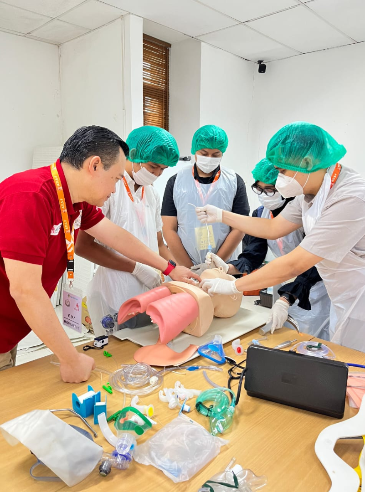
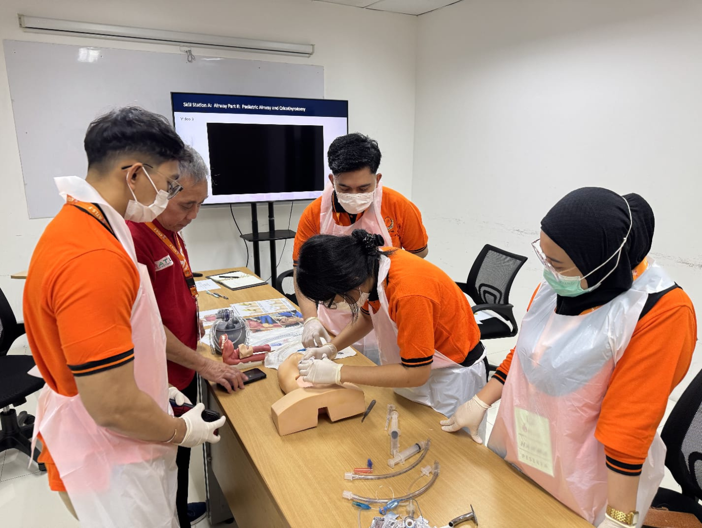
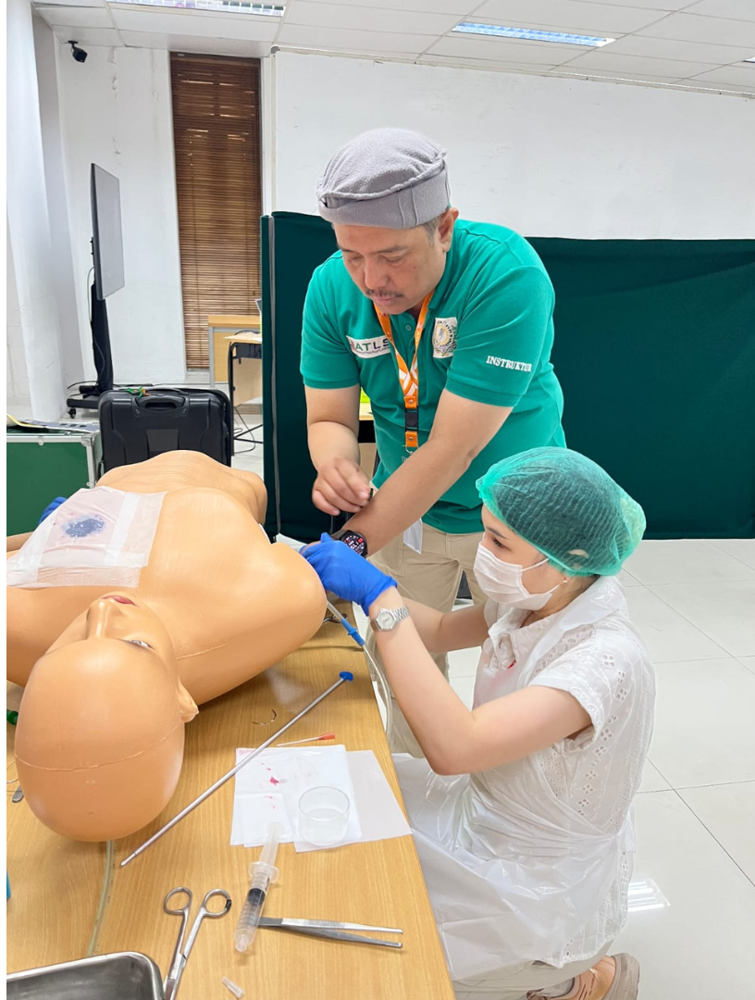
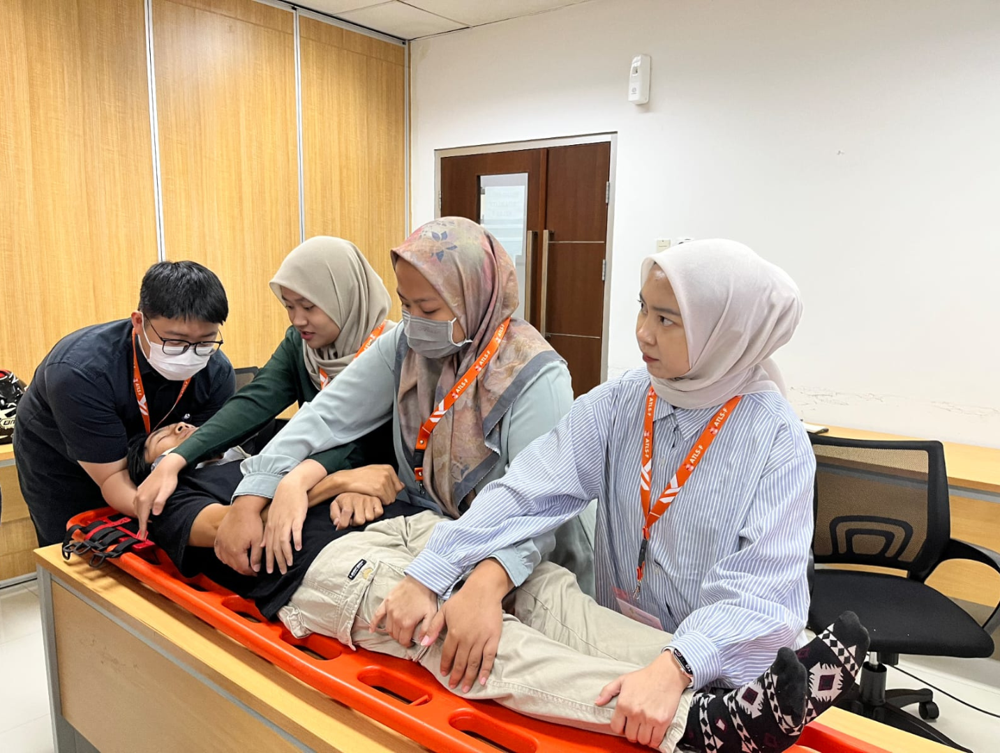
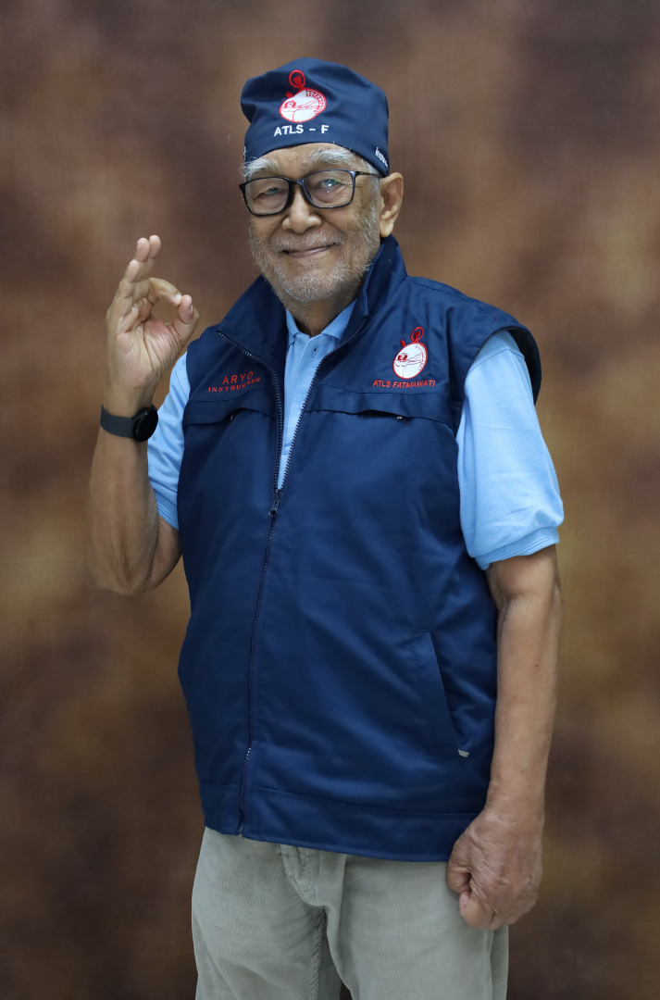
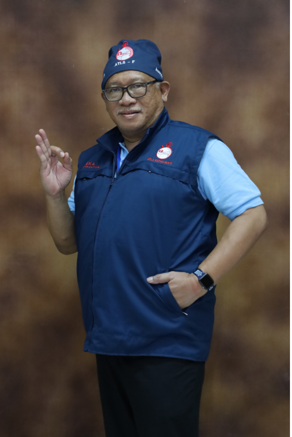
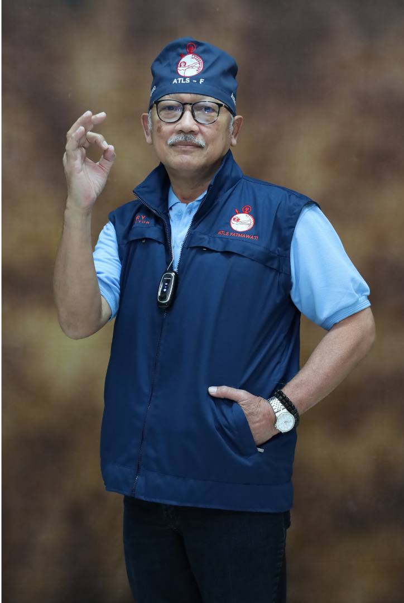
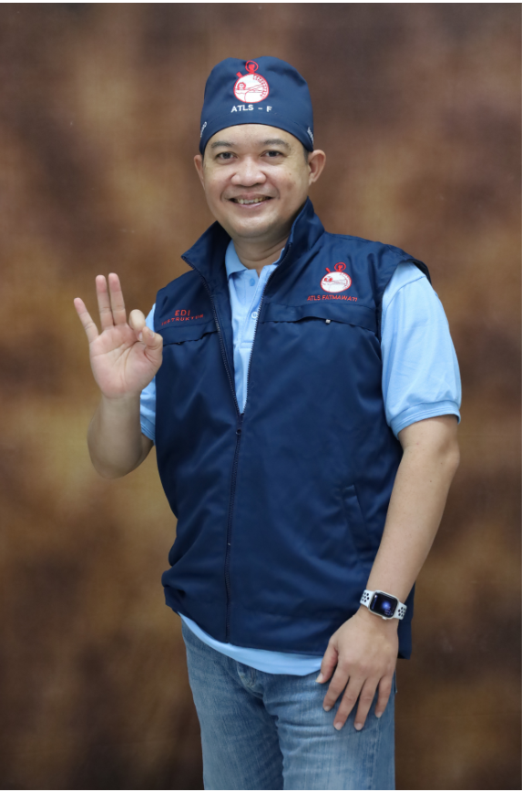
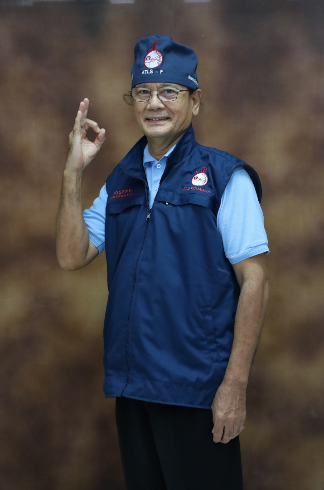

Welcome to ATLS
Komisi Trauma IKABI
For healthcare professionals and enthusiasts
- Expert panels on trauma care
- Hands-on workshops for skills
- Valuable networking opportunities
- Insights from leading specialists




SEJARAH
ATLS Indonesia pertama kali diperkenalkan oleh Prof. Dr. dr. Aryono D. Pusponegoro, SpB(K)BD, FCSI. FICEP, FRCSEd (Ad Hom) pada tahun 1995 (merupakan pelatihan trauma yang pertama di Indonesia) melalui IKATAN AHLI BEDAH KOMISI TRAUMA dan ditujukan kepada dokter umum dan dokter spesialis yang biasanya akan menempati puskesmas dan rumah sakit yang merupakan ujung tombak pelayanan di Indonesia.

Pelopor ATLS Indonesia
Prof. Dr. dr. Aryono D. Pusponegoro
INSTRUKTUR

dr. Eka Swabhawa Uttama, SpB

dr. Harry Triyono, SpB

dr. Edi Setiyoso, SpB

dr. Joseph Saragih, SpB
dr. Arum Ernanti Mulyaningtyas, SpAN
dr. Wishnu Pramudito D. Pusponegoro, SpB
Dr. dr. Edi Prasetyo, Sp.N., S.H., M.H
ATLS KOMISI TRAUMA IKABI
Join Us
Secure your spot for insightful discussions and networking opportunities today!